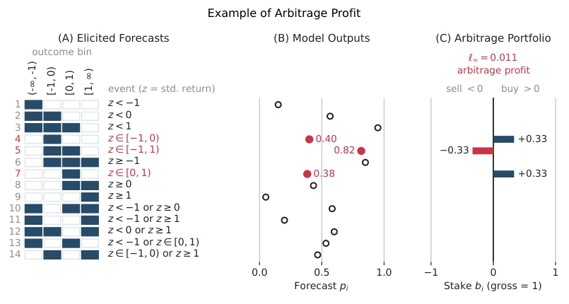
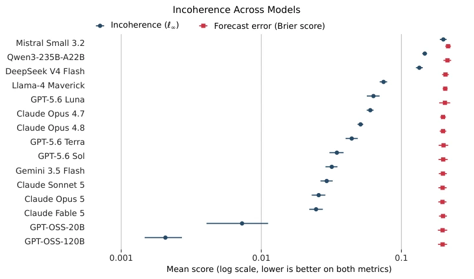
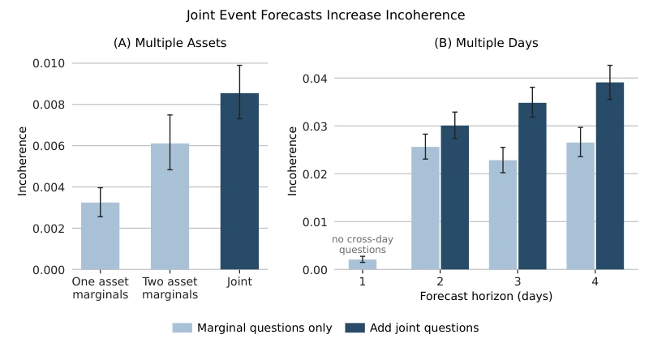
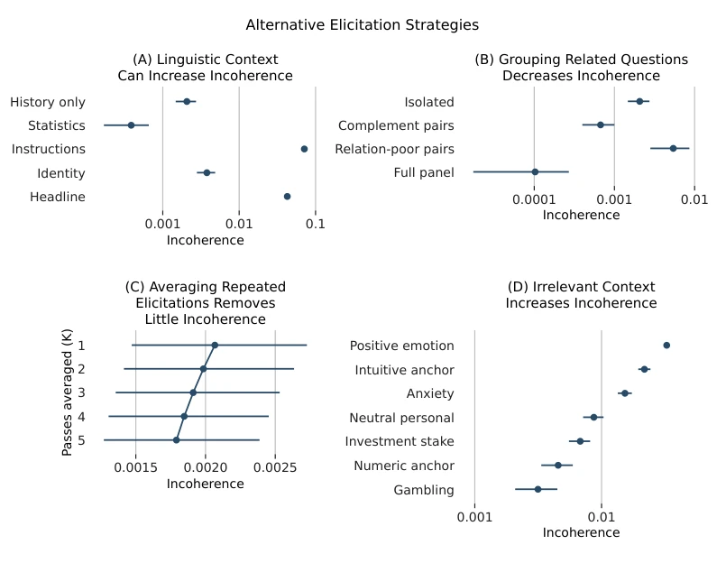
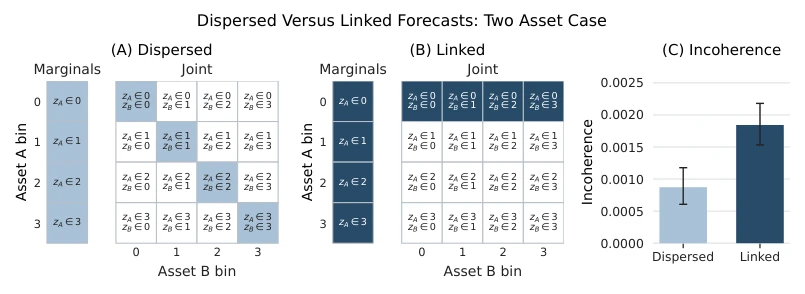
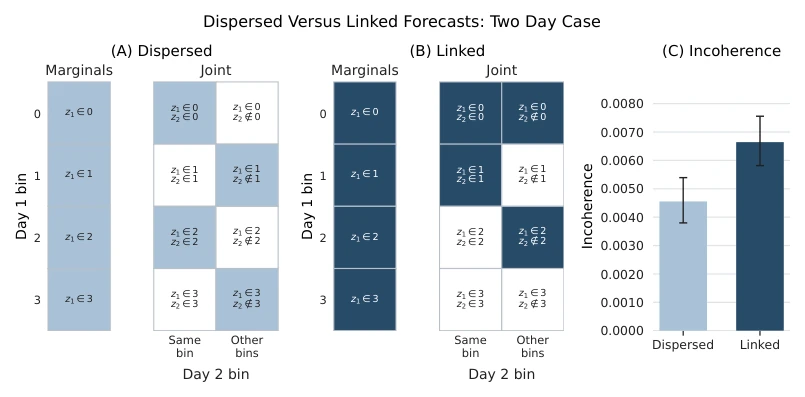

This paper pours cold water on LLMs that claim to possess "world models": you speak of probabilities on your lips, yet cannot even manage basic logical consistency in your hearts. The authors did not engage in fancy hallucination detection, but instead directly deployed the financial world's "Dutch Book" (Dutch Book) theory, treating LLMs as unreliable gamblers to see if they could guarantee risk-free profit through arbitrage. The results reveal that LLMs are not only unreliable, but the more complex the logic, the more egregious the inconsistency becomes; even trivial "nonsense" (such as whether the predictor drank coffee today) can cause inconsistency to surge by an order of magnitude. Although the authors claim this is "label-free" evaluation, which sounds appealing, it essentially only proves that LLMs are "logical defective products" within probability space. However, the finding that "full query" can actually repair logic loopholes points a clear path for subsequent training strategies: do not ask singly; let the model view the entire family portrait before placing a bet.
研究动机Motivation
随着LLM被广泛用于辅助人生决策（如预测自然灾害或经济走势），用户往往默认模型输出的概率是相干的（coherent），即符合概率论公理。然而，现有研究多关注预测的准确性（accuracy）或校准度（calibration），却忽视了概率陈述内部的逻辑一致性。Paleka et al. [2025] 虽然提出了交叉预测一致性检查，但仅关注特定属性，缺乏全局视角。更关键的是，传统评估依赖真实结果标签（outcome labels），这在事件尚未发生或无法观测时失效。Andrews [2026] 虽提出利用de Finetti定理进行无标签评估，但缺乏实证数据支持。本文旨在填补这一空白：利用de Finetti的荷兰书定理，构建一个无需标签的套利利润指标，量化LLM在复杂逻辑关系下的概率不一致性，揭示其“世界模型”的内在缺陷。
As LLMs are widely used to assist life decisions (such as predicting natural disasters or economic trends), users often assume the probabilities output by the model are coherent (coherent), i.e., conforming to probability theory axioms. However, existing research mostly focuses on prediction accuracy (accuracy) or calibration (calibration), yet ignores logical consistency within probability statements. Paleka et al. [2025] proposed cross-prediction consistency checks, but only focused on specific attributes, lacking a global perspective. More critically, traditional evaluation relies on real outcome labels (outcome labels), which fails when events have not occurred or cannot be observed. Andrews [2026] proposed utilizing the de Finetti theorem for label-free evaluation, yet lacks empirical data support. This paper aims to fill this gap: utilizing de Finetti's Dutch Book theorem, construct a label-free arbitrage profit indicator to quantify LLM probability inconsistency under complex logical relationships, revealing its "world model" internal defects.
The overall process is based on the de Finetti theorem: if a set of probability predictions are coherent, then no arbitrage strategy can guarantee positive returns. The authors constructed a linear programming (LP) problem to find the maximum arbitrage profit (arbitrage profit), using this as the inconsistency measure. The specific steps are as follows: First, define the event set and its logical structure (through atomic event decomposition), constructing the association matrix M. Second, query the LLM for probabilities p of a series of events. Next, solve the LP problem: maximize the minimum return, i.e., max_{||b||_1<=1} min_j sum_i b_i(M_ij - p_i), where b is the bet vector. If the maximum profit is 0, the prediction is coherent; otherwise, the profit value is the degree of inconsistency. The core innovation of this method lies in converting financial arbitrage theory into an LLM evaluation tool, relying completely on logical constraints between events, without requiring real results. The experimental design includes multiple prompt strategies (elicitation arms), such as single event queries, multi-asset/multi-day joint queries, full panel queries, etc., to test performance under different logical complexities. Additionally, prompt robustness is tested by adding irrelevant context (such as mood, personal habits).

Figure 1: An example of arbitrage profit. The figure shows, for a particularly incoherent draw, the queried events (left), the model’s stated probabilities (center), and the corresponding portfolio (right). The three binding events are highlighted. Any coherent forecast satisfies P(−1 ≤z < 0) + P(0 ≤ z < 1) = P(−1 ≤z < 1). In this case the model’s stated probabilities are 0.4000 and 0.3833 and 0.8167, respectively. Therefore, buying one third unit each of events 4 and 7 and selling one third unit of event 5 yields profit 0.01113 on every atom. In the figure, numbers are rounded to two significant digits.
Experiments were based on 100 stock trading days, evaluating 15 models (including GPT-OSS-120B, Claude series, etc.), conducting a total of 365,100 queries. Main findings: 1. Universal Inconsistency: In baseline tests, the average arbitrage profit was 0.002, with some cases reaching over 1%, far exceeding rounding errors. 2. Logic Dependency Exacerbates Inconsistency: Joint event queries involving multiple assets or multiple days saw significant increases in inconsistency. 3. Prompt Strategy Sensitivity: Full panel queries (asking all relevant events at once) almost eliminated inconsistency, whereas single event queries performed the worst; irrelevant context (such as "I am in a good mood") could increase inconsistency by 10 times. 4. Model Differences: Inconsistency varied enormously between different models (100-fold), and was positively correlated with accuracy (Brier score), but with stronger volatility. Ablation experiments indicated that averaging repeated queries provided limited help in improving consistency, suggesting the problem stems from the model's reasoning mechanism rather than randomness.

Figure 2: Incoherence varies across the 15 evaluated models. This figure reports mean profit per unit stake and mean Brier score for each model. Error bars corresponding to 95 percent date-clustered bootstrap intervals are reported for each statistic.

Figure 3: Questions with logical dependencies increase incoherence. This figure reports mean profit per unit stake across experiments that vary the number of days and assets evaluated per query, as well as whether the queries link multiple days or assets. Panel (A) reports results across multiple assets, and Panel (B) reports results across forecast horizons.

Figure 4: Elicitation experiments. This figure reports mean profit per unit stake across experiments that vary the elicitation procedure. Panel (A) includes additional linguistic context with information about the stock’s past returns, identity, or current news, as well as forecasting instructions. Panel (B) elicits multiple probability estimates per query. Panel (C) averages up to five repeated elicitations. Panel (D) adds irrelevant context that should not affect the probability forecast.

Figure 5: Linking forecasts across two assets increases incoherence. This figure reports the results of an experiment that holds the number of elicited events fixed, but varies the strength of relationships across events. Panels (A) and (B) include examples of dispersed and linked event sets (we include more permutations in the full analysis). Each event set contains four marginal events and four joint events. Panel (C) reports incoherence across the two elicitation strategies. Incoherence is on average 0.00097 [0.00081, 0.0012] higher for linked event sets.

Figure 6: Linking forecasts across two days increases incoherence. This figure reports the results of an experiment that holds the number of elicited events fixed, but varies the strength of relationships across events. Panels (A) and (B) include examples of dispersed and linked event sets (we include more permutations in the full analysis). Each event set contains four marginal events and four joint events. Panel (C) reports incoherence across the two elicitation strategies. Incoherence is on average 0.0021 [0.0019, 0.0023] higher for linked event sets.